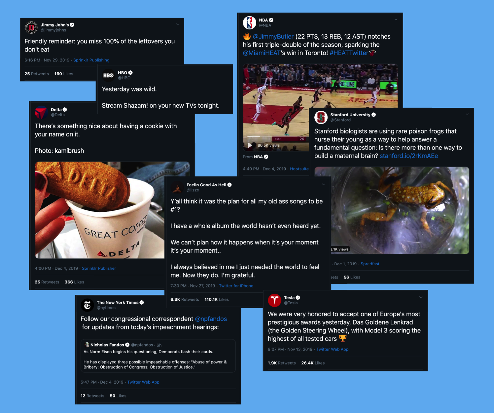

Articles
Using my voice to share my passions
Beyond the lyrics: the intersection of music and data visualization
Using Spotify API and Tableau to Perform Sentiment Analysis on Lyrics
Patent 12 minute read
November 12, 2019
Do it for the ‘gram: Instagram-style Caption Generator
Generating captions for Instagram photos using a Keras CNN-RNN framework
Patent 10 minute read
December 3, 2019

Analyzing Twitter spheres through NLP techniques
Exploring a dataset of 8 categories x 10 accounts x 10000 tweets using sentiment analysis, word clouds, and recurrent neural networks
Patent 21 minute read
December 5, 2019
How valuable are the numbers we consume?
Note: this is an opinion piece on wearable technology and health data
Patent 9 minute read
November 26, 2019